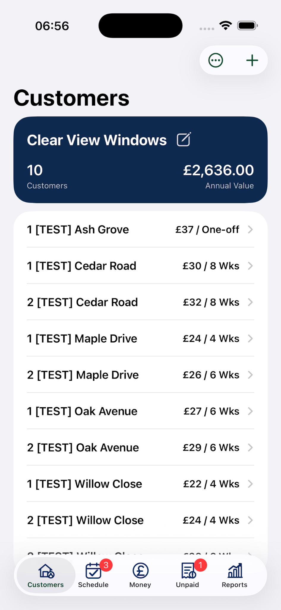
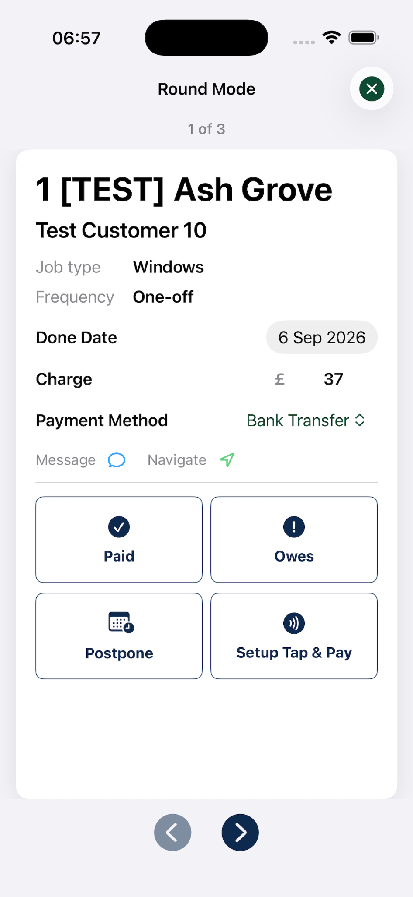
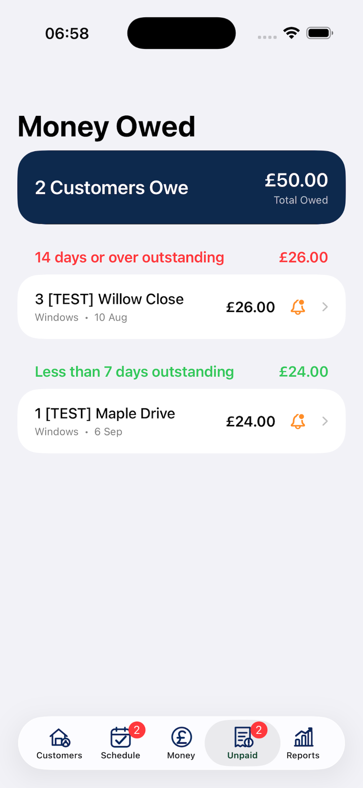
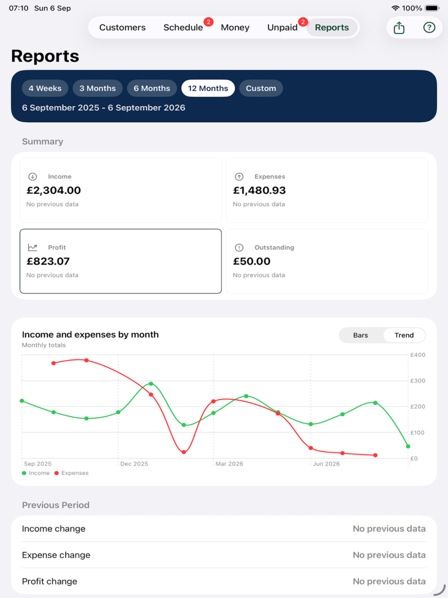

✓
One-round simplicity
Add a customer, set the price and frequency, then work from the schedule. No user roles, team dashboards or multi-round admin to configure.
ClearRound is built mainly for sole-trader window cleaners who want to organise one round well — not run a fleet, manage departments or learn a huge business system.
Customers, schedule, money owed, payments and reports — kept deliberately straightforward.

Plenty of excellent business platforms are designed to manage teams, multiple rounds, advanced invoicing, marketing and accounting. ClearRound takes a different approach: the everyday tools a sole trader needs, with less setup and fewer screens to get through.
Add a customer, set the price and frequency, then work from the schedule. No user roles, team dashboards or multi-round admin to configure.
Designed around quick use on iPhone while you are out working, with an iPad layout when you want more space for reports and admin.
Use ClearRound free with up to 25 active customers, then unlock unlimited customers for £29.99 a year — about £2.50 a month.
ClearRound keeps the core workflow small, while adding the practical features that save real time.
Keep addresses, contact details, notes, photos and multiple job types together. Set recurring frequencies or one-off work.
See work that is due, overdue and coming up. Complete, postpone or move through jobs quickly in Round Mode.
Mark a completed job paid straight away or leave it outstanding. ClearRound keeps payment date and completion date separate.
Take card payments from inside ClearRound using Stripe. On supported setups, Tap to Pay can turn the iPhone into the payment terminal.
Track job income, other income and business expenses without turning the app into full accounting software.
See income, expenses, profit and outstanding money across useful date ranges, with bar and trend views.
Move an existing customer list into ClearRound using CSV instead of typing every customer again. Import tools help check the structure before committing the full file.
Export customer and financial data to CSV so your information is not trapped inside the app and can be used elsewhere when needed.
Use iCloud to keep your ClearRound data backed up with your Apple account, giving extra reassurance if you change or replace a device.
Use saved customer contact details to send a message, and open supported addresses in your preferred maps app when you need directions.
The interface is intentionally roomy and direct, so the important action is obvious even when you are working outside.



Round Mode keeps the next action in front of you. Complete the job, record whether it was paid, postpone it if needed, take a card payment, then move straight to the next customer.
Squeegee, CleanerPlanner and Aworka are established tools with broader business-management features. Those features can be ideal if you run teams or several rounds. ClearRound is aimed at the sole trader who would rather not pay for or configure all of that.
| At a glance | ClearRound | Squeegee | CleanerPlanner | Aworka |
|---|---|---|---|---|
| Advertised entry price | £29.99/yearUnlimited plan | From £15.83/month + VAT | From £19/month | From £13.20/month inc VAT |
| Best suited to | Sole traders / one round | Sole traders through larger teams | Round businesses, including teams | Solo businesses through franchises |
| Team users & permissions | Intentionally not included | Extensive roles and permissions | Team plan available | Multiple users supported |
| Multiple rounds / staff allocation | One-round focus | Yes | Unlimited rounds; team assignment | Rounds and team allocation |
| Route optimisation / live workers | Simple map navigation | Route optimisation + live worker view | Broader scheduling tools | Planning and mobile job access |
| Accounting / VAT / tax tools | Simple income, expenses & reports | VAT, MTD and broader finance tools | P&L, VAT and MTD options | VAT, expenses and yearly summaries |
| Messaging & marketing | Direct customer messages & reminders | Bulk messages and campaigns | SMS and bulk email on higher plans | Customer communication / invoicing |
| Import / export | CSV import + export | Bulk data tools | Import + CSV export | Data export |
Competitor features and advertised prices checked 6 September 2026. Plans and features can change; this is a high-level comparison rather than an exhaustive feature list.
No feature maze and no business-size tiers. Try the real app free, then upgrade only when your customer list grows.
Free
For new rounds, small rounds and trying ClearRound properly.
ClearRound Unlimited
About £2.50 a month. The same simple app, without the customer limit.
ClearRound is built mainly for independent window cleaners and sole traders running their own round. It is deliberately not trying to be staff-management software for businesses operating several rounds.
Yes. ClearRound works on iPhone and iPad. The iPhone experience is designed for day-to-day use on the round, while iPad gives more room for areas such as reports.
Yes. ClearRound supports CSV import so you can bring customer data across instead of entering every customer manually. You can also export data back out to CSV when required.
Mark the job as Owes. It remains in the Money Owed list until you record payment, with the payment date kept separate from the job completion date.
Yes. ClearRound can use Stripe to take card payments inside the app. You need a Stripe account, and Stripe's own transaction charges apply separately.
ClearRound supports iCloud backup using your Apple account. CSV export also gives you a portable copy of key data when you want one.
Yes. A job can be recurring or one-off, so occasional gutter, fascia, conservatory or other work can sit alongside regular window-cleaning jobs.
No. It tracks the figures a sole trader commonly wants to see — income, expenses, profit and money owed — and lets you export data. It is intentionally simpler than full bookkeeping, VAT or MTD software.
iPhone + iPad · Free up to 25 customers · £29.99/year unlimited.